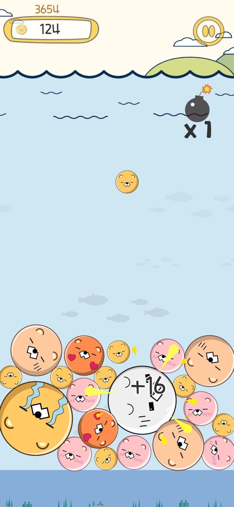
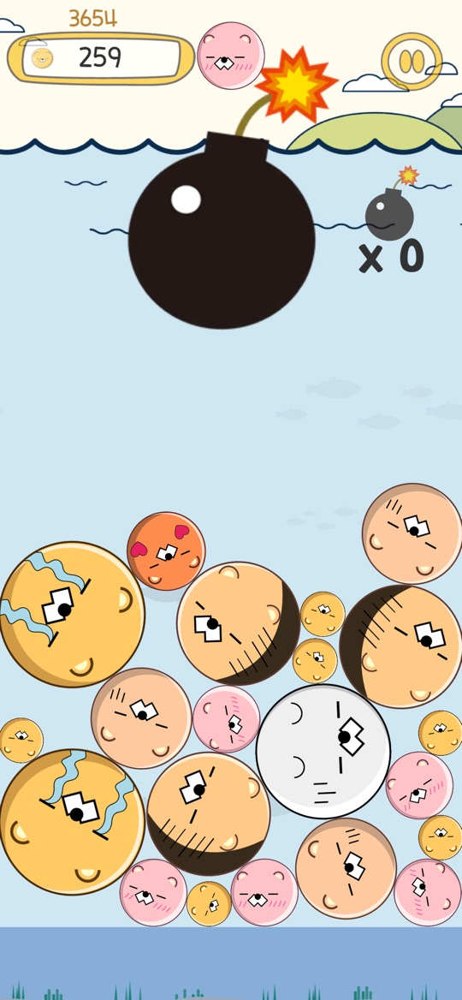
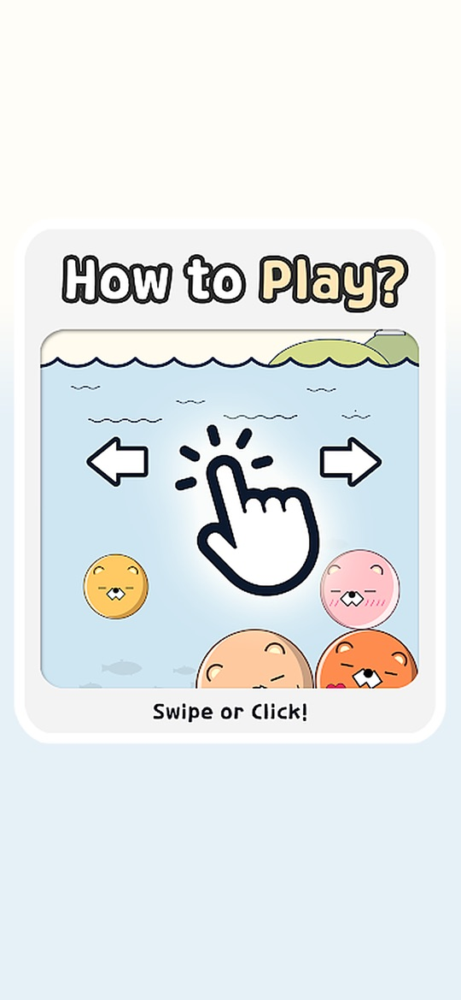

위에서 팅글이를 떨어뜨려 같은 팅글이끼리 부딪히면 더 큰 팅글이로 합쳐지는 한 손 합치기 퍼즐입니다. 상자가 넘치기 전까지 최대한 크게 합쳐 최고 점수에 도전합니다.
게임의 기본 흐름
- 상자 위쪽에 다음에 떨어질 팅글이가 나타납니다. 위치를 정해 떨어뜨립니다.
- 같은 팅글이 두 마리가 닿으면 한 단계 큰 팅글이로 합쳐지고 점수를 얻습니다. 큰 팅글이를 합칠수록 얻는 점수도 커집니다.
- 합쳐진 팅글이가 다시 같은 크기와 닿으면 연쇄로 합쳐집니다.
- 팅글이가 상자 위쪽 선을 넘은 채로 머물면 회색으로 변하며 경고하고, 그대로 몇 초가 더 지나면 게임이 끝납니다. 최고 점수는 랭킹에 반영됩니다.
조작
- 떨어뜨리기: 화면을 누른 채 좌우로 움직이면 대기 중인 팅글이가 손가락을 따라옵니다. 손을 떼면 그 자리에서 떨어집니다. 원하는 위치를 한 번 탭해도 됩니다.
- 폭탄: 상자 오른쪽 위의 폭탄 아이콘을 누르면 위에서 폭탄이 떨어집니다. 남은 개수는 ‘x 숫자’로 표시됩니다.
- 일시정지: 오른쪽 위 일시정지 버튼으로 게임을 멈추거나 끝낼 수 있습니다. 일시정지 메뉴에서 직접 끝내면 부활 제안은 나오지 않습니다.
처음 시작하기
- 아래에서 원하는 에디션을 설치합니다. 무료 버전은 광고가 있고, 광고 제거 버전은 현재 원스토어에서 확인됩니다.
- 첫 화면의 물음표(도움말)로 ‘Swipe or Click!’ 안내를 확인하고 START를 누릅니다.
- 처음 몇 번은 작은 팅글이를 한쪽 구석에 떨어뜨리며 합쳐지는 크기 순서를 익힙니다.
- 게임이 끝나면 최고 점수가 저장되고, 첫 화면의 랭킹 버튼으로 다른 사람의 기록과 비교할 수 있습니다.
초보자를 위한 참고 팁
아래는 게임 규칙을 바탕으로 한 제안입니다. 물리 움직임 때문에 같은 위치에 떨어뜨려도 결과가 매번 같지는 않습니다.
- 큰 팅글이는 한쪽에 모아 보세요. 큰 팅글이를 한쪽 아래에 두고 작은 팅글이를 반대쪽에서 키워 가면 같은 크기끼리 만나기 쉬워집니다.
- 가운데를 높게 쌓지 마세요. 가운데가 솟으면 떨어진 팅글이가 엉뚱한 쪽으로 굴러가기 쉽습니다.
- 회색 팅글이가 보이면 서두르세요. 선 위에 오래 머문 팅글이가 회색으로 변한 것은 곧 게임이 끝난다는 신호입니다. 그 아래 공간을 비우는 쪽에 떨어뜨리세요.
- 폭탄은 위기 때를 위해 남겨 두세요. 개수가 한정되어 있으므로 선 가까이 쌓였을 때 쓰는 편이 효과를 보기 쉽습니다.
- 떨어뜨리기 전에 손을 멈추세요. 손가락을 움직이는 중에 떼면 생각한 위치보다 조금 옆으로 떨어질 수 있습니다.
스크린샷
App Store 한국 스토어에 게시된 공식 스크린샷입니다(App Store 버전 1.0 기준).



자주 묻는 질문
- 무료 버전과 광고 제거 버전은 무엇이 다른가요?
- 게임 규칙은 같고, 무료 버전에는 광고가 있습니다. 2026년 10월 20일 현재 광고 제거 버전은 원스토어의 ‘팅글 팅글 : 수박게임 (광고제거)’에서 확인됩니다. Google Play의 광고 제거판 주소(com.RiceCookey.donglepaid)는 한국·미국 스토어 모두에서 페이지를 찾을 수 없었으므로 이 페이지에 링크하지 않았습니다.
- 폭탄은 몇 개 받나요?
- Google Play 무료 버전 v2.2 기준으로 한 판에 폭탄 1개로 시작하고, 다 쓴 뒤에는 광고를 보고 한 판에 최대 2번 더 쓸 수 있습니다.
- 부활이 있나요?
- Google Play 무료 버전 v2.2에 추가되었습니다. 선을 넘겨 게임이 끝나려 할 때 광고를 보면 선 위에 쌓인 팅글이가 정리되고 이어서 할 수 있습니다(한 판에 1회, 정리된 팅글이에는 점수가 없음). 다시 하기를 누를 때 나오던 전면 광고는 v2.2에서 제거되었습니다.
- 랭킹은 어떻게 이용하나요?
- 최고 점수가 랭킹에 올라갑니다. Google Play 버전 v2.2부터 전 세계 플레이어와 겨루는 글로벌 랭킹이 있고, Google Play 게임즈 로그인을 지원합니다.
- 버전을 바꾸면 기록이 옮겨지나요?
- 무료 버전과 광고 제거 버전은 서로 다른 앱입니다. 기록이 자동으로 옮겨지는지는 확인하지 못했으므로, 옮겨진다고 가정하지 마세요.
- iOS와 Android의 버전 번호가 왜 다른가요?
- App Store 판은 1.0(2026년 8월 19일 배포), Google Play 판은 v2.2 업데이트(2026년 7월 28일)로 따로 관리됩니다. 위의 부활·글로벌 랭킹 설명은 Google Play 업데이트 안내 기준이며, App Store 판의 기능 구성과 광고 표시는 이 페이지에서 확인하지 못했습니다.
- 버그는 어떻게 알리나요?
- ricecookey.help@gmail.com으로 에디션(무료/광고 제거), 스토어, 기기 모델, OS 버전, 가능하면 스크린샷을 보내 주세요.
스토어 링크
무료 버전(광고 포함)
Google Play 페이지에 ‘광고 포함’이 표시됩니다. App Store 판도 무료이며 광고 표시 여부는 스토어 표기로 확인하지 못했습니다.
iOS 15.0 이상(App Store 기준), 연령 등급 4+(App Store).
문의
질문, 요청, 버그 제보: ricecookey.help@gmail.com
참고 자료와 확인 범위
- Google Play 무료 버전 페이지 — 2026년 7월 28일 업데이트, v2.2 안내(글로벌 랭킹·부활·재도전 전면 광고 제거), ‘광고 포함’ 표시
- App Store 페이지 — 버전 1.0(2026년 8월 19일 배포), 조작 설명과 스크린샷
- 원스토어 무료 버전, 원스토어 광고 제거 버전 — 판매 페이지와 제목만 확인
게임 오버 경고, 폭탄 개수, 부활 동작은 2026년 10월 20일에 확인한 게임 코드와 스토어 안내를 따랐습니다. 스토어별 빌드와 업데이트에 따라 달라질 수 있으며, 앱 안의 표시가 이 페이지보다 우선합니다.
English
Tingle Tingle is a one-handed merge puzzle: drop Tingles from the top, and when two identical Tingles touch they merge into a bigger one. Keep merging before the box overflows and chase your best score.
How it works
- The next Tingle appears above the box. Choose a spot and drop it.
- When two identical Tingles touch, they merge into the next size up and you score points. Bigger merges are worth more.
- If the merged Tingle touches another of the same size, they merge again in a chain.
- If a Tingle stays above the line near the top of the box, it turns gray as a warning; a few seconds later the game ends. Your best score goes to the leaderboard.
Controls
- Drop: touch and slide left or right; the waiting Tingle follows your finger. Lift your finger to drop it there. A single tap on a spot works too.
- Bomb: tap the bomb icon at the top right of the box and a bomb falls from above. The remaining count shows as “x number”.
- Pause: the pause button at the top right pauses or ends the game. Ending from the pause menu does not offer a revive.
Getting started
- Install the edition you want from below. The free edition has ads; the ad-free edition is currently confirmed on ONE Store.
- On the title screen, open the question mark (help) to see the “Swipe or Click!” guide, then press START.
- For your first few drops, keep small Tingles in one corner and learn the order of sizes as they merge.
- When the game ends, your best score is saved; the ranking button on the title screen compares it with other players.
Beginner tips
These suggestions are based on the game's rules. Because of the physics, dropping at the same spot does not always give the same result.
- Keep big Tingles on one side. With the big ones low on one side and small ones growing on the other, same-size Tingles meet more easily.
- Avoid a tall middle. A peak in the center sends new Tingles rolling off in unexpected directions.
- Act fast when a Tingle turns gray. Gray means it has been above the line too long and the game is about to end. Drop where it will clear space underneath.
- Save bombs for emergencies. You only get a few, so they tend to help most when the stack is close to the line.
- Stop moving before you lift. Releasing while your finger is still moving can drop the Tingle slightly off from where you meant.
Screenshots
Official screenshots from the Korean App Store listing (App Store version 1.0).
FAQ
- What is the difference between the free and ad-free editions?
- The rules are the same; the free edition shows ads. As of October 20, 2026, the ad-free edition is confirmed on ONE Store as “팅글 팅글 : 수박게임 (광고제거)”. The Google Play ad-free address (com.RiceCookey.donglepaid) returned “not found” in both the Korean and US stores, so it is not linked here.
- How many bombs do I get?
- In Google Play free edition v2.2, each game starts with 1 bomb; after using it you can watch an ad for another, up to twice per game.
- Is there a revive?
- It arrived in Google Play free edition v2.2. When a Tingle over the line is about to end the game, watching an ad clears the Tingles stacked above the line so you can continue (once per game; cleared Tingles give no points). v2.2 also removed the full-screen ad that appeared when retrying.
- How does the ranking work?
- Your best score is submitted. From Google Play v2.2 there is a global ranking against players worldwide, with Google Play Games sign-in.
- Does my record move if I switch editions?
- The free and ad-free editions are separate apps. We could not confirm that records transfer automatically, so do not assume they do.
- Why do iOS and Android have different version numbers?
- The App Store build is 1.0 (released August 19, 2026) and the Google Play build received the v2.2 update (July 28, 2026); they are maintained separately. The revive and global ranking notes above come from the Google Play update notes; the App Store build's feature set and ad display were not checked for this page.
- How do I report a bug?
- Email ricecookey.help@gmail.com with the edition (free or ad-free), store, device model, OS version and a screenshot if possible.
Store links
Free edition (contains ads)
The Google Play page shows “Contains ads”. The App Store build is also free; whether it shows ads was not confirmed from the store listing.
Ad-free edition
Confirmed on ONE Store only, as of October 20, 2026. No ad-free edition was confirmed on Google Play or the App Store.
Requires iOS 15.0 or later (App Store), rated 4+ (App Store).
Contact
Questions, requests and bug reports: ricecookey.help@gmail.com
References and scope
- Google Play free edition listing — updated July 28, 2026; v2.2 notes (global ranking, revive, retry interstitial removed); “Contains ads” label
- App Store listing — version 1.0 (released August 19, 2026), controls and screenshots
- ONE Store free edition and ONE Store ad-free edition — listing and title only
The gray warning, bomb counts and revive behavior follow the game code and store notes checked on October 20, 2026. They may differ between store builds and change with updates, and what the app shows takes precedence over this page.